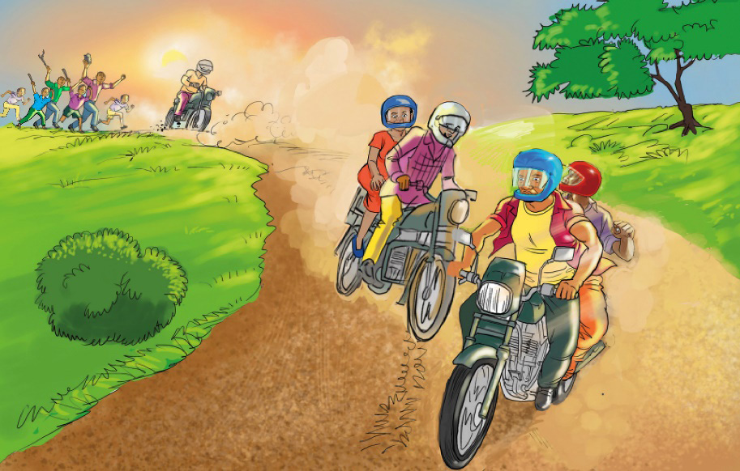

Punde si punde, wezi walizingirwa na watu na kupigwa mawe na fimbo. Wezi waliumia na kupata majeraha. Askari aliwasihi watu wasiwaue. Badala yake, aliwafunga pingu na kuwapeleka Kituo cha Polisi cha Mikindani. Kisha, walipelekwa mahakamani ambapo walihukumiwa kwenda jela miaka kumi.
Zoezi la 5: Ufahamu
1.
Majuto anaishi mtaa gani?
2.
Askari alifanya nini ili kuokoa pikipiki ya Shango?
3.
Je, unapenda tabia za Majuto? Kwa nini?
4.
Taja mafunzo yasiyopungua matatu yanayopatikana katika habari uliyosoma.
5.
Utachukua hatua gani endapo umemshauri mwenzako aache tabia mbaya halafu yeye akakataa?